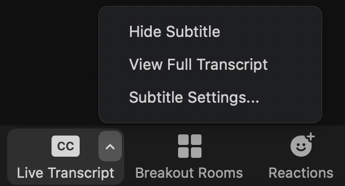

Welcome
Zoom tips
We are using Zoom for this training, giving us breakout rooms for small group work. To
make the session as smooth as possible, we ask that you:
- Use a computer. You may want to use the screen share functionality to work in your breakouts.
- Rename yourself when you join the call. Use your first and last name, plus your pronouns if you want to be referred to with pronouns, as in:
- Mary Smith, she/her
- Quinn Hanson, they/them
- Corey Jones


Images from this site. - Stay muted. You should unmute when you speak in the smaller breakout rooms, and if called upon to share during the whole-group sessions. Too much background noise negatively impacts the experience for everyone. We will mute you if need be.
- Use video when possible. Plan to have your video on for all breakout sessions and much of the whole-group sessions. You can turn it off when we are screen-sharing or if your internet connection is not strong.
- Find Speaker/Gallery View. In the top right hand corner you will see a small icon that you can use to change from Speaker to Gallery view and back.

Image from Zoom help. - Open the chat. This can be found along the bottom menu bar (in black) just to the right of the Share Screen button. You may need to click the More ... button. You can the chat ask a question or make a comment as we go through the session. You can either aim your message at Everyone or privately to a specific participant. Note that private chat messages with a host are visible to all hosts via the transcript after the meeting.
- Show/Hide live captioning. Use the bottom menu bar (in black) to find the Live Transcript button. The popup menu allows you to hide or show subtitles.

Ground Rules
Ground Rules
Be open-minded. We may introduce ideas in the training that you are unsure about or have questions about. We ask that you stay open-minded to us and to your fellow mentors.Be willing to be uncomfortable. We like to think of mentoring as something that is positive, and it is. Yet being an effective mentor means we may have to be uncomfortable with what we don’t know. It can also mean trying new things, or working with other mentors and with student mentees in ways that push us out of our comfort zone. This is when we learn. It doesn’t mean it is easy.
Speak from your own perspective. We want you to use “I” statements, which means you speak for yourself and from your own vantage point. It’s easy to say “we at Microsoft” or “we from this university” think or do things in a certain way. But, it helps if you only speak for yourself rather than for other people.
Be patient and allow space for all to learn. We recognize everyone is at different places in their learning and have had different experiences. For some of you, this may be a review, and you could facilitate training for others. We ask you to be patient and help others move forward. For this pilot to be successful, we will need everyone to be on the same page and at a certain level of comfort. Toward that end, please think about whether you should step up or step back. If you are someone who needs to push yourself and learn more, we encourage you to step up to the challenge. If someone in your group needs you for support, we ask you to step up to this challenge. If you are someone who knows the answer or knows what to do, please step back from time to time so others get a chance to participate.
Facilitation means interruption. We only have a limited amount of time with you during each structured session. As facilitators, we may need to interrupt your thought process and conversation. Please know we value your contributions, and we do not interrupt for a lack of care for what you have to offer. To respect your time, we will push forward, which can feel challenging. We name this now to flag it going in. Please know you will have opportunities to ask questions or share ideas, whether in the chat, through end-of-session reflection, after the session and in other spaces.
What’s said here stays here; what’s learned can be shared. When people are learning, they may make missteps. We all say things that we wish we could revise. We ask that you do not leave the training space and refer back to what specific people said when they were practicing their mentoring. This way we can all relax a bit into learning. We do, however, encourage you to share anything you learn.
Q&A for session 2
Please look here for Q & A!Top